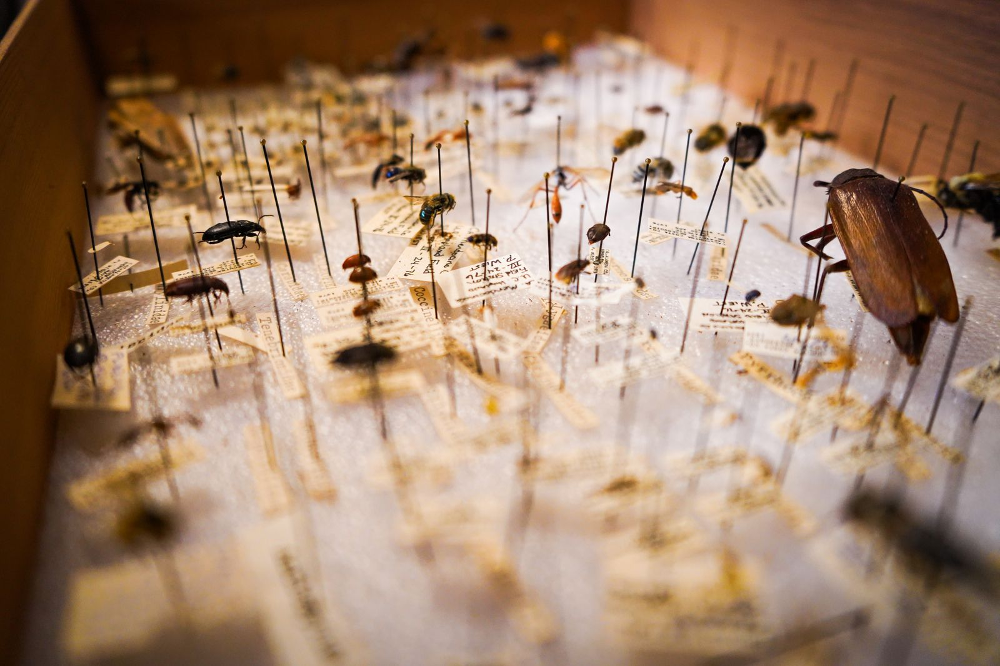

Forensic entomology · England & Wales
Insects keep time in degrees, not hours.
The Chitin Archive provides entomology support to police forces, coroners and legal teams: scene attendance, specimen identification, and post-mortem interval estimation from insect development and succession.

01 · Register of services
What the archive is instructed to do
Six services, each logged the way exhibits are logged. If the work you need is not on this register, the practice does not offer it.
02 · The method, in the open
The degree-day calculator — a teaching example
Insect development is driven by accumulated heat, not by the calendar. This is the arithmetic at the centre of the practice, shown with a simplified example so any reader — officer, solicitor, juror — can check it by hand.
Method panel — read first
Development is summed in accumulated degree-days (ADD): for each day, the day's mean temperature minus a base temperature below which development effectively stops.
ADD = Σ ( Tmean − Tbase ), summed over days
days at or below the base contribute 0
In this teaching example the base is a stated 10 °C and the temperature is held constant, so the sum is one multiplication. Real casework integrates hourly scene temperatures, and real bases are species- and stage-specific, taken from validated rearing data for the species actually identified.
Work the example
| Stage | Accumulates (ADD) | What the examiner records |
|---|---|---|
| Egg | 0 – 25 | Eggs present; no larvae. The clock has barely started. |
| First instar | 25 – 60 | Newly hatched larvae, 1–2 mm; identified by mouthpart structure. |
| Second instar | 60 – 110 | Larvae growing; posterior spiracles show two slits. |
| Third instar — feeding | 110 – 175 | Peak feeding; crop content and size recorded before preservation. |
| Post-feeding — wandering | 175 – 240 | Larvae leave the food source to pupariate; crop empties. |
| Pupa — within the puparium | 240 – 420 | The longest single stage; the puparium itself persists as evidence. |
| Adult — emerged | 420 + | Empty puparial cases remain after the adult has flown. |
The row the calculator reaches is marked in the table. In casework, a stage is read from the specimen under the microscope — the temperature record is then worked backwards, and the answer is served as a range.
03 · Fees, printed
What an instruction costs
Day rates are published because instructing officers and solicitors budget before they instruct. Build the shape of an instruction below; the arithmetic is printed, and the total is an estimate for planning — the scoping call, which is not charged, settles the actual fee.
Instruction estimator — day rates as printed
What moves the price
Distance to the scene, first: travel beyond 50 miles is charged at cost, agreed in advance. Second, the report deadline — a statement needed inside five working days is priced as such, openly.
What does not
The conclusion. The fee is identical whether the estimate helps or harms the instructing party's case, and it is never contingent on an outcome.
Before any fee
A scoping call with the instructing officer or solicitor is not charged. If the entomology cannot assist, the practice says so on that call — and charges nothing.
On entry CA-S03 — expert statement & report writing
“Dr Adler's statements are the ones counsel reads first. The estimate is a range, the assumptions are on the page, and the limitations are stated before anyone has to ask. On two occasions her evidence narrowed the window this force was working to — and on both, it held.”
Instructing on behalf of a force, a coroner's office or a legal team? Lodge an instruction enquiry — the scoping call is not charged.
Lodge an enquiry